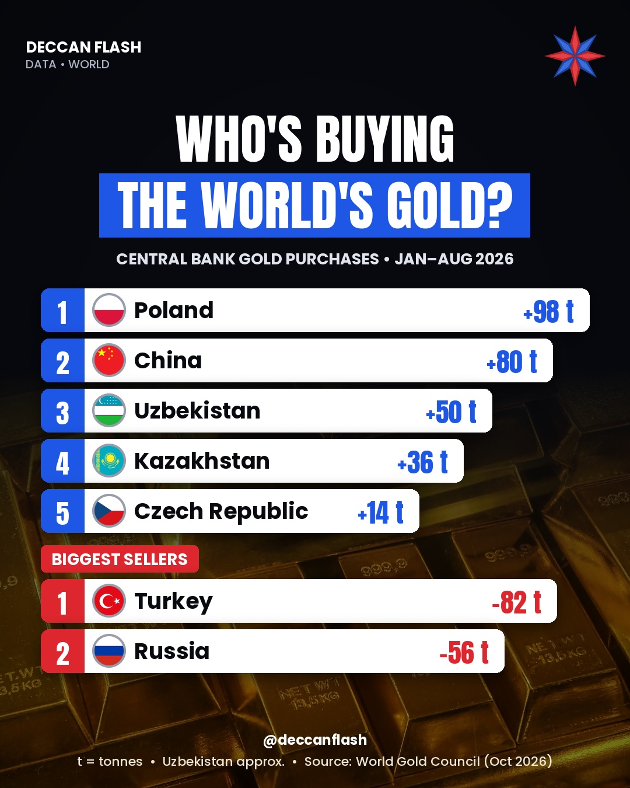

Gold · World
Who's buying the world's gold in 2026?
170 tonnesadded by central banks, Jan–Aug 2026 (net)
Poland is the biggest buyer of gold in 2026, ahead of China, which has now bought for 23 months in a row. Turkey and Russia are the biggest sellers.
Net change in official gold reserves, Jan–Aug 2026
Tonnes. Blue = bought, red = sold. Uzbekistan and Kazakhstan are approximate ("close to" in the source).
The ranking
| # | Country | Jan–Aug 2026 | Total gold held |
|---|---|---|---|
| 1 | Poland | +98 t | 648 t |
| 2 | China | +80 t | ~2,387 t |
| 3 | Uzbekistan | ~+50 t | ~439 t |
| 4 | Kazakhstan | ~+36 t | ~377 t |
| 5 | Czech Republic | +14 t | 86 t |
| 6 | Jordan | +2 t | 75 t |
| – | Russia | −56 t | 2,271 t |
| – | Turkey | −82 t | – |
China also bought about 21 tonnes more in September 2026, which is not included in this January–August ranking.

Quick answers
Which country is buying the most gold in 2026?
Poland, with 98 tonnes from January to August 2026. Its central bank is aiming for 700 tonnes.
Is China still buying gold?
Yes. China added 80 tonnes in January–August 2026 and about 21 tonnes more in September, its 23rd straight month of buying.
Is India buying gold?
India's RBI holds about 880 tonnes, the 8th-largest official holding in the world, but it was not among the top buyers in January–August 2026.